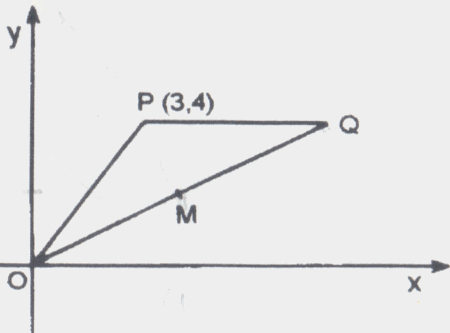
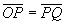
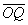
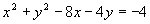

No triângulo OPQ, representado na figura ao lado,
e PQ é paralela a Ox.Nessas condições, é verdade:
CLIQUE SOBRE O NÚMERO PARA VER A SOLUÇÃO
(01)As coordenadas de Q são (8, 4).
(02)O ponto médio de

é M = (4, 2).(04) A reta paralela ao eixo Ox que passa por P é x = 3.
(08) A reta perpendicular a OP que passa por P tem por equação  .
.
(16) A equação da circunferência de centro em M e tangente ao eixo Oy é

.(32) A área do triângulo OPQ é igual a 32 u.a.
 Voltar à Lista de Questões
Voltar à Lista de Questões